DigiBlood - UI/UX Case Study

The application is created to encourage current blood donors to continue donating blood while also assisting new blood donors.
It also allows users to keep track of all of their health cards and prescriptions at one place.
The Problem
Discover
Quantative Research
Pain Points
Brainstorming
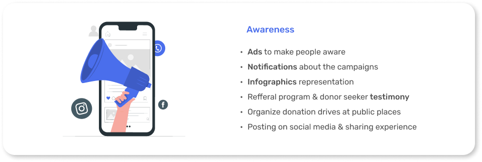 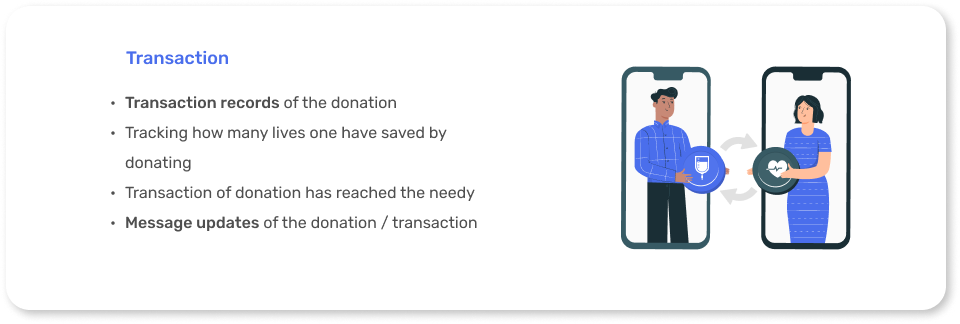 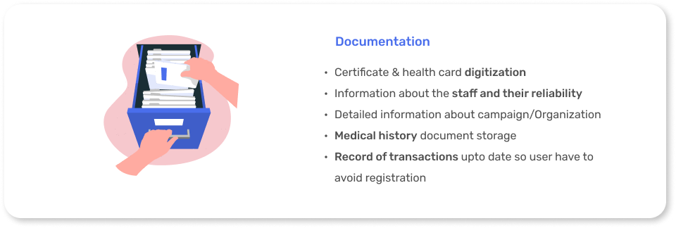Wireframes
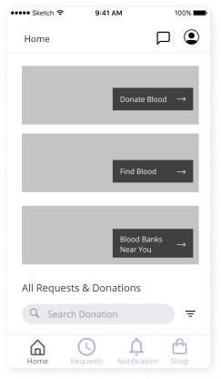
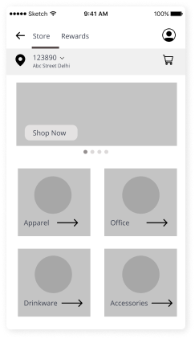
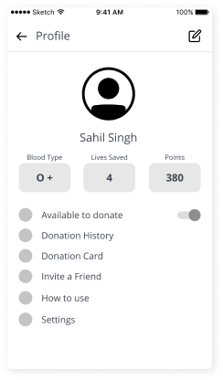
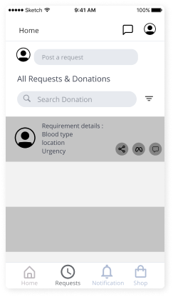
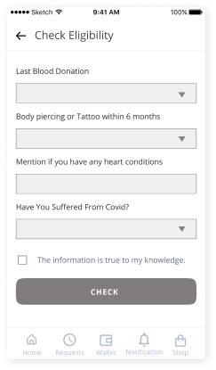
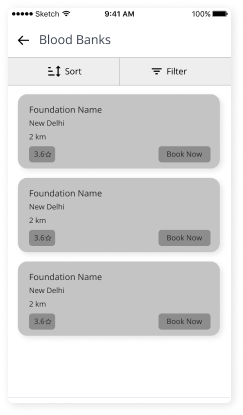
Final Mobile Layout
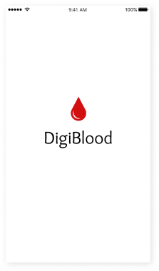
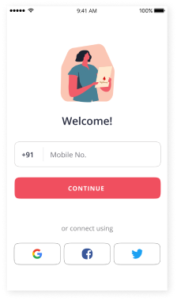
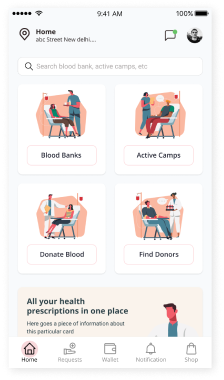
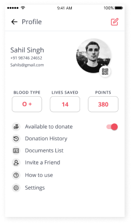
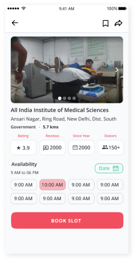
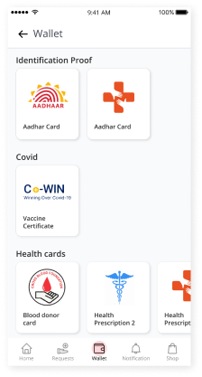